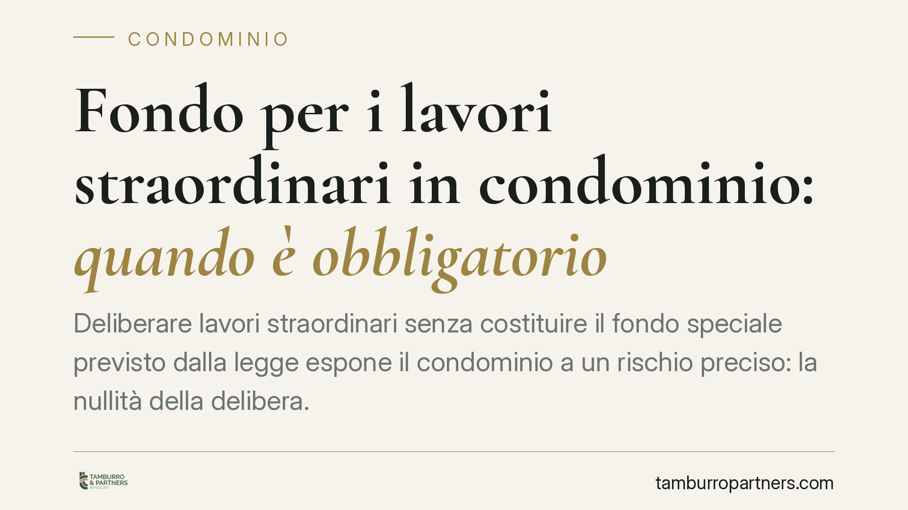

Fondo per i lavori straordinari in condominio: quando è obbligatorio
Deliberare lavori straordinari senza costituire il fondo speciale previsto dalla legge espone il condominio a un rischio preciso: la nullità della delibera. Un vizio grave, rilevabile in ogni tempo e da chiunque vi abbia interesse. Analizziamo quando il fondo è obbligatorio, quali eccezioni la norma ammette e come gestire correttamente l'iter assembleare per evitare contenziosi.

Il fatto e perché conta
Quando l'assemblea approva opere di manutenzione straordinaria o innovazioni, non basta deliberare l'esecuzione e il riparto della spesa. La legge impone un passaggio ulteriore: la costituzione di un fondo speciale di importo pari all'ammontare dei lavori.
Si tratta di una garanzia a tutela sia dell'impresa che eseguirà le opere, sia dei condòmini che le finanziano. La sua assenza non è un'irregolarità sanabile nel tempo: incide sulla validità stessa della decisione assembleare.
Inquadramento normativo
L'obbligo nasce dall'art. 1135, comma 1, n. 4, cod. civ., che attribuisce all'assemblea il compito di deliberare le opere di manutenzione straordinaria e le innovazioni, prevedendo espressamente la costituzione di un fondo speciale di importo pari all'ammontare dei lavori.
La norma consente una modalità alternativa: se i lavori devono essere eseguiti in base a un contratto che ne prevede il pagamento graduale in funzione del loro progressivo stato di avanzamento, il fondo può essere costituito in relazione ai singoli pagamenti dovuti. In altri termini, l'alimentazione del fondo può seguire gli stati di avanzamento lavori (SAL), senza dover anticipare per intero l'importo complessivo.
La giurisprudenza di legittimità qualifica la delibera priva del fondo come nulla, non meramente annullabile. La differenza è sostanziale: la nullità è rilevabile d'ufficio dal giudice, può essere fatta valere da chiunque vi abbia interesse e non è soggetta al termine di trenta giorni previsto per l'impugnazione delle delibere annullabili (art. 1137 cod. civ.). Non vale neppure la ratifica implicita di chi ha votato a favore.
Le eccezioni: sconto in fattura e cessione del credito
L'obbligo di fondo conosce deroghe pensate per i meccanismi di finanziamento agevolato. Quando il pagamento dei lavori avviene tramite sconto in fattura o cessione del credito – strumenti utilizzati nella stagione dei bonus edilizi – il fondo può non essere richiesto, perché il condominio non sostiene un esborso finanziario diretto corrispondente.
Si tratta però di ipotesi da verificare caso per caso. La semplice intenzione di accedere a un beneficio fiscale non esonera automaticamente dall'obbligo: occorre che il meccanismo di pagamento sia effettivamente strutturato in modo da neutralizzare l'anticipazione finanziaria.
Implicazioni pratiche
Per l'amministratore e per l'assemblea le conseguenze sono concrete.
Una delibera nulla non produce effetti: i lavori deliberati su quella base poggiano su un atto impugnabile a tempo indeterminato. Questo genera incertezza sui rapporti con l'impresa appaltatrice e sulla stessa riscossione delle quote.
Il singolo condòmino dissenziente – ma anche chi ha votato a favore o si è astenuto – può contestare la decisione anche a distanza di mesi o anni, bloccando l'intervento o mettendo in discussione le somme già versate.
Per l'amministratore si profila inoltre un possibile profilo di responsabilità: aver portato in approvazione una delibera viziata, omettendo la costituzione del fondo, può esporlo a contestazioni sulla corretta gestione del mandato.
Cosa fare in concreto
- Inserire il fondo nell'ordine del giorno. Prevedete espressamente la costituzione del fondo speciale come punto specifico della delibera, non come clausola implicita.
- Verificare la modalità di finanziamento. Accertate se i lavori rientrano nelle eccezioni (sconto in fattura, cessione del credito) prima di escludere il fondo, e documentate la struttura del pagamento.
- Collegare il fondo agli stati di avanzamento. Se il contratto prevede pagamenti graduali, costituite il fondo in relazione ai singoli SAL, calibrando le richieste ai condòmini.
- Verbalizzare con precisione. Date atto in verbale dell'importo del fondo, delle modalità di versamento e delle ragioni di un'eventuale esclusione.
- Richiedere una verifica preventiva. Per interventi di importo rilevante o con finanziamento complesso, consigliamo un controllo legale della delibera prima dell'assemblea, così da ridurre il rischio di nullità.
Disclaimer
Contributo informativo a cura di Tamburro & Partners - Avv. Giuseppe Tamburro. Non costituisce parere legale.
Ogni condominio ha una storia a sé.
Se gestisci un'amministrazione e vuoi un confronto su una specifica questione condominiale, scrivi allo studio. Ti rispondiamo entro un giorno lavorativo.